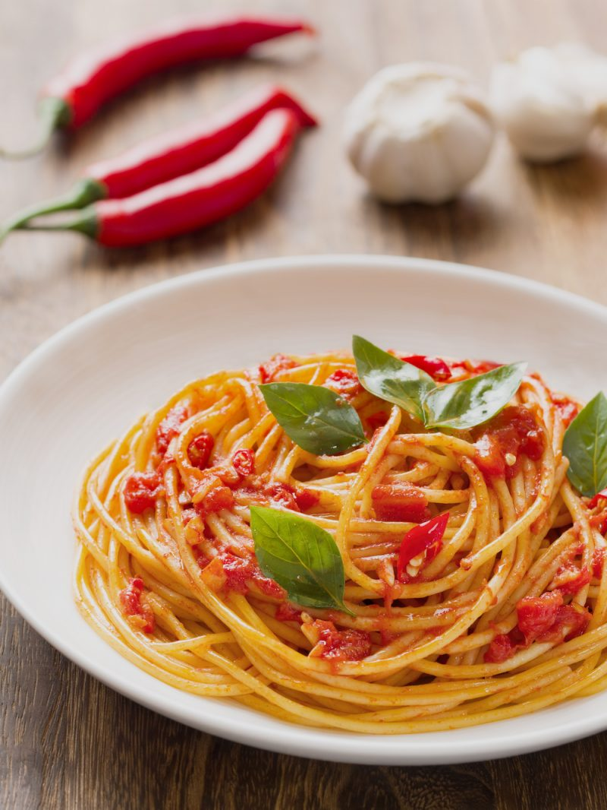

Pomodoro

Spaghetti Pomodoro
The easiest way to have a real italian food expirience
in under 30min on the table
Ingredients
- 300g Spaghetti
- 400 g cherry tomatos
- extra virgin olive oil
- fresh basil
- 4 garlic gloves
Steps
- Cook pasta for 9min
- cut tomatoes in half
- put the garlic on medium heat in a pan with olive oil
- fry for 30 sec
- place the tomatos in the pan
- add a bit of the basil
- let it cook for 10 min
- remove the basil
- put the tomatoes in a mixer
- tomatoues and pasta in a pan an toss
- serve it